Alleen de stappen voor jouw keuze worden getoond.
MK8DX thuis of op de club — handleiding
Deze handleiding neemt je stap voor stap mee: van een lege computer tot een gespeelde avond. Je hebt geen IT-kennis nodig. Lees de hoofdstukken op volgorde; elk hoofdstuk bouwt voort op het vorige.
Eerlijk vooraf: de installatie voor thuis en de club is nog een testversie. Het pakket noemt zichzelf in README-FIRST.txt een "A2 OFFLINE QA CANDIDATE": bedoeld voor een testcomputer, nog geen volledig goedgekeurde route. Windows 11 is het verst getest. Linux is nog niet volledig getest. macOS is nog niet op een echte Mac getest. Waar iets nog niet getest of nog niet gebouwd is, staat dat bij die stap.
Zo lees je een stap: na Doe staat wat je doet, na Je ziet wat er dan hoort te gebeuren, en na Zie je iets anders? wat je dan doet. Vetgedrukte woorden zijn knoppen of teksten die je precies zo op het scherm ziet.
1. Wat is MK8DX thuis of op de club, en wat heb je nodig?
MK8DX is een website voor Mario Kart 8 Deluxe: Time Trials (tijdritten) bijhouden en vergelijken, LiveTrial-opnames en toernooiavonden. Bij deze installatie draait die website op één computer in je eigen netwerk. Telefoons, tablets en andere computers in hetzelfde netwerk openen de website via die computer. Er gaat niets naar internet.
Iedereen logt in met een persoonlijke inlogkaart: een kaartje met een QR-code. Een QR-code is een vierkante streepjescode die je scant met de camera van je telefoon of tablet.
In deze handleiding heet de computer waarop MK8DX draait de MK8DX-computer.
Wat je nodig hebt:
- Eén computer die aan blijft zolang er gespeeld wordt: Windows 11 met een Intel- of AMD-processor, Linux of macOS. Aanbevolen is 8 GB werkgeheugen. De installatie controleert dat er minstens 6 GB vrije schijfruimte is.
- Een thuisnetwerk: de wifi of de netwerkkabels van je router. Een router is het kastje dat je netwerk maakt (vaak van je internetaanbieder). Alle apparaten moeten op hetzelfde netwerk zitten. Gebruik geen gastennetwerk: dat schermt apparaten meestal van elkaar af.
- Telefoons, tablets of andere computers voor de spelers, liefst met een camera om QR-codes te scannen.
- Een printer is handig om inlogkaarten en de herstelcode af te drukken, maar niet verplicht.
Wat je niet nodig hebt:
- Geen internet tijdens het spelen. Alleen bij het voorbereiden download je één keer Docker, Python en het MK8DX-pakket (of iemand geeft ze je op een USB-stick).
- Geen account bij een ander bedrijf, geen e-mailadres en geen cloud.
- Geen abonnement. MK8DX en Python zijn gratis. Docker Desktop is gratis voor persoonlijk gebruik en kleine organisaties; de voorwaarden staan op de website van Docker. Op Linux gebruik je de gratis Docker Engine.
2. De computer voorbereiden
MK8DX heeft twee gratis hulpprogramma's nodig:
- Docker laat programma's draaien in afgeschermde "containers". De website en de database van MK8DX draaien daarin. Op Windows en macOS heet het programma Docker Desktop.
- Python is een programmeertaal. Het installatieprogramma van MK8DX is ermee geschreven. Je hebt Python 3.12 tot en met 3.15 nodig.
Doe alleen het deel voor jouw computer (2A, 2B of 2C) en sla de andere twee over.
2A. Windows 11 voorbereiden
- Doe kijk welke processor je computer heeft: Start → Instellingen → Systeem → Info, regel Systeemtype.Je ziet "64-bits besturingssysteem, x64-processor".Zie je iets anders? Staat er een ARM-processor, dan past het Windows-pakket van MK8DX niet: dat bestaat alleen voor x64 (Intel en AMD).
- Doe installeer eerst WSL (Windows Subsystem for Linux). Dat is een onderdeel van Windows waarop Docker draait; zonder WSL kan Docker Desktop niet installeren. Klik met de rechtermuisknop op de Startknop en kies Terminal (beheerder) of Windows PowerShell (beheerder). Klik op Ja als Windows om toestemming vraagt. Typ
wsl --installen druk op Enter.Je ziet Windows downloadt en installeert WSL en Ubuntu; dat duurt een paar minuten. Aan het eind staat dat je de computer opnieuw moet opstarten. Start de computer opnieuw op.Zie je iets anders? Opent er na het opnieuw opstarten een venster dat om een gebruikersnaam en wachtwoord voor Ubuntu vraagt: vul een zelfgekozen naam en wachtwoord in (die heeft MK8DX niet nodig) en sluit het venster daarna. Staat er dat WSL al geïnstalleerd is, typ danwsl --updateen druk op Enter. Staat er iets over virtualisatie ("Virtual Machine Platform" of "virtualization"), dan staat virtualisatie uit in de BIOS van de computer; zet die aan (bij de fabrikant heet het vaak Intel VT-x of AMD-V) of vraag hulp. - Doe download op docker.com Docker Desktop voor Windows (x86_64 / AMD64) en open het gedownloade bestand.Je ziet het installatieprogramma van Docker met de keuze om WSL 2 te gebruiken. WSL is een onderdeel van Windows waarop Docker draait. Laat die keuze aangevinkt en klik op OK.Zie je iets anders? Vraagt Windows of dit programma wijzigingen mag aanbrengen, klik dan op Ja.
- Doe wacht tot de installatie klaar is en start de computer opnieuw op als Docker daarom vraagt.Je ziet na het opnieuw opstarten opent Docker Desktop (of open het zelf via het Startmenu). De eerste keer vraagt Docker de voorwaarden te accepteren.Zie je iets anders? Vraagt Docker om in te loggen of een account te maken: MK8DX heeft geen Docker-account nodig, sla dat over als Docker dat aanbiedt. Meldt Docker toch dat WSL ontbreekt of bijgewerkt moet worden, doe dan stap 2 opnieuw (
wsl --installofwsl --update) en start opnieuw op. - Doe wacht in het venster van Docker Desktop.Je ziet linksonder Engine running.Zie je iets anders? "Engine starting" kan een paar minuten duren. Blijft het hangen of staat er een fout, start de computer opnieuw op en open Docker Desktop weer. Docker moet in de gewone stand voor Linux-containers staan (niet "Windows containers").
- Doe ga naar python.org → Downloads en download de Python install manager voor Windows (het bestand eindigt op
.msix). Dat is tegenwoordig de officiële manier om Python op Windows te installeren. Open het gedownloade bestand en klik op Installeren.Je ziet Windows installeert de Python install manager; daarna kun je het venster sluiten.Zie je iets anders? Je kunt hem ook installeren via de Microsoft Store: zoek op "Python install manager" en klik op Installeren. Gebruik één van de twee, niet allebei. - Doe klik op Start, typ
PowerShell, open Windows PowerShell, typpy install 3.15en druk op Enter. Dat installeert Python zelf (de install manager is alleen het hulpprogramma dat Python binnenhaalt).Je ziet de eerste keer een paar vragen om de instellingen te controleren; beantwoord die met Enter (de voorgestelde keuze) of mety. Daarna wordt Python gedownload en geïnstalleerd. Een vraag om een map aan je PATH toe te voegen mag je metybeantwoorden; nodig is het niet.Zie je iets anders? Installeer precies 3.15 zoals hierboven; 3.12, 3.13 of 3.14 werkt ook, een nieuwere versie (3.16 of hoger) nog niet. - Doe sluit PowerShell, open hem opnieuw, typ
python --versionen druk op Enter.Je zietPython 3.15met nog een nummer erachter, bijvoorbeeldPython 3.15.2.Zie je iets anders? Opent de Microsoft Store, of staat er dat python niet gevonden is: klik op Start, typ App-uitvoeringsaliassen beheren en open het. Zet Python (default) aan en zet App-installatieprogramma python.exe en python3.exe uit. Heb je vroeger een oude Python of de "Python launcher" geïnstalleerd, verwijder die dan via Instellingen → Apps → Geïnstalleerde apps en probeer het opnieuw.
2B. Linux voorbereiden (Ubuntu of Debian)
Linux is nog niet volledig getest met MK8DX. De stappen zijn uitgewerkt voor Ubuntu 24.04 of nieuwer. Je typt ze in een terminal: een venster waarin je tekstopdrachten geeft (in Ubuntu open je die met Ctrl+Alt+T). Elke opdracht sluit je af met Enter. sudo voor een opdracht betekent "als beheerder van deze computer": Linux vraagt dan je wachtwoord, en tijdens het typen zie je geen tekens. Dat is normaal.
- Doe typ
python3 --version.Je zietPython 3.12,3.13,3.14of3.15.Zie je iets anders? Een lager nummer (Debian 12 heeft bijvoorbeeld 3.11) is te oud; 3.16 of hoger wordt nog niet ondersteund. Je hebt dan een nieuwere versie van je Linux nodig; Ubuntu 24.04 heeft Python 3.12. - Doe typ
sudo apt updateen daarnasudo apt install docker.io docker-compose-v2 python3-venv. Beantwoord de vraag of je wilt doorgaan met J (of Y) en Enter.Je ziet de pakketten worden gedownload en geïnstalleerd.Zie je iets anders? Kan apt een pakket niet vinden, dan heet het op jouw Linux anders (op Debian kan dat). Ga door en controleer in stap 5 of Docker Compose werkt. - Doe typ
sudo systemctl enable --now docker. Dit start Docker nu en ook bij elke volgende keer dat de computer opstart.Je ziet geen foutmelding (soms een regel die met "Created symlink" begint). - Doe typ
sudo usermod -aG docker $USER. Dit geeft jouw gebruiker het recht om Docker te gebruiken. Meld je daarna af en weer aan (of start opnieuw op): het recht werkt pas na opnieuw aanmelden.Je ziet geen foutmelding. → Let op: wie in de groep docker zit, heeft in feite beheerdersrechten op deze computer. Voeg alleen jezelf toe. - Doe controleer met
docker infoen daarnadocker compose version.Je ziet een lijst gegevens zonder foutmelding, en "Docker Compose version" met een nummer.Zie je iets anders? "permission denied": doe stap 4 en vergeet het afmelden niet. "Cannot connect to the Docker daemon": doe stap 3.
Een firewall is een beveiliging die bepaalt welke verbindingen een computer binnenlaat. Staat op je Linux de firewall ufw of firewalld aan, dan laat de installatie in hoofdstuk 3 zien welke opdracht MK8DX doorlaat.
2C. macOS voorbereiden
Let op: macOS is nog niet op een echte Mac getest. De stappen hieronder volgen wat de installatie op macOS verwacht.
- Doe kies Apple-menu → Over deze Mac en kijk bij Chip of Processor.Je ziet een Apple-chip (M1, M2 en verder) of een Intel-processor. Onthoud welke: het MK8DX-pakket en Docker Desktop bestaan voor beide, en je hebt de passende versie nodig (Apple-chip heet arm64, Intel heet amd64).
- Doe download op docker.com Docker Desktop voor Mac met de passende chip, open het gedownloade bestand en sleep Docker naar Apps (Programma's).Je ziet Docker in je map Apps.
- Doe open Docker. Accepteer de voorwaarden; vraagt macOS om je wachtwoord, vul het in.Je ziet na een tijdje Engine running in het venster van Docker Desktop.Zie je iets anders? Vraagt Docker om in te loggen: MK8DX heeft geen Docker-account nodig, sla dat over als Docker dat aanbiedt.
- Doe download op python.org de macOS-installer van Python 3.15 en open hem. Klik de stappen door met Ga door en Installeer.Je ziet de melding dat de installatie gelukt is.
- Doe open Terminal (Apps → Hulpprogramma's → Terminal), typ
python3 --versionen druk op Enter.Je zietPython 3.12of hoger.Zie je iets anders? Een lager nummer (bijvoorbeeld 3.9 van Apple zelf): sluit Terminal en open hem opnieuw. Blijft het een lager nummer, installeer Python dan opnieuw van python.org. - Doe typ in Terminal
docker info.Je ziet een lijst gegevens zonder foutmelding.Zie je iets anders? Start Docker Desktop en wacht op Engine running.
3. MK8DX installeren
Het pakket uitpakken
- Doe download het MK8DX-pakket voor thuis of de club voor jouw systeem: Windows, Linux of macOS, en bij Linux en macOS ook voor jouw processor (amd64 of arm64). Wil je controleren of de download klopt: dat staat in
docs/install/START_HIER.md.Je ziet een zip-bestand in je map Downloads.Zie je iets anders? Waarschuwt de browser dat het bestand onveilig of zelden gedownload is: kies Bewaren (Chrome: Keep). Windows: klik daarna met rechts op het zip-bestand → Eigenschappen, vink onderaan Blokkering opheffen aan en klik op OK. Doe dat vóór het uitpakken; anders kan Windows (Smart App Control)Start-MK8DX-LAN.cmdlater blokkeren. Zet Smart App Control niet uit: dat kan daarna alleen nog met een nieuwe Windows-installatie weer aan. - Doe pak het zip-bestand uit naar een vaste map, bijvoorbeeld in Documenten een map MK8DX. Windows: klik met rechts op het zip-bestand → Alles uitpakken. Kies een map die blijft staan: MK8DX start later steeds vanuit deze map, dus verplaats of verwijder hem niet.Je ziet een map met onder andere
Start-MK8DX-LAN.cmd,README-FIRST.txten de mappendocs,imagesentooling.Zie je iets anders? Opende je het zip-bestand alleen maar in Verkenner, pak het dan echt uit: vanuit het zip-bestand starten werkt niet.
Starten op Windows
- Doe dubbelklik in de uitgepakte map op Start-MK8DX-LAN.cmd.Je ziet een zwart venster met regels als "MK8DX package:" en "Private installation:". De eerste keer staan er ook "Preparing the included Python packages (once, without internet)." en "Loading the included Docker images. This can take several minutes." Dat duurt enkele minuten. Daarna staat er "MK8DX setup is open in your browser:" en opent de installatie in je browser.Zie je iets anders? Zie de meldingen hieronder.
- Doe laat het zwarte venster open tot je in de installatie op Voltooien hebt geklikt. Het venster zegt dat ook: "Keep this window open until you click Finish."
Meldingen in het zwarte venster op Windows:
- "Python 3.12 to 3.15 is missing. Install the Python install manager from python.org (or the Microsoft Store), run: py install 3.15, reopen PowerShell and retry." Doe hoofdstuk 2A stap 6 tot en met 8 en dubbelklik daarna opnieuw op Start-MK8DX-LAN.cmd.
- "Docker Desktop is missing or not running. Start Docker Desktop in Linux-container mode, wait until it shows "Engine running", and retry." Start Docker Desktop, wacht op Engine running en dubbelklik opnieuw.
- Onder een fout staat "The selected step stopped. Read the message above before retrying." Lees de regel erboven, los dat op en druk op een toets om het venster te sluiten.
Starten op Linux en macOS
- Doe open een terminal in de uitgepakte map. Linux: klik in de map met rechts en kies "Openen in terminal" als je bestandsbeheer dat aanbiedt. macOS en Linux kan ook zo: open Terminal, typ
cd(met een spatie erachter), sleep de map in het venster en druk op Enter.Je ziet de terminal staat in de map van het pakket. - Doe typ
sh tooling/start-mk8dx.shen druk op Enter.Je ziet "MK8DX package:", het Python-nummer, "Docker Compose version". De eerste keer ook "Loading the included Docker images. This can take several minutes." en "Preparing the included Python packages (once, without internet)." Daarna "Private installation:" en "MK8DX setup is open in your browser:", en de installatie opent in je browser.Zie je iets anders? Opent er geen browser, kopieer dan het adres dat methttp://127.0.0.1:begint uit de terminal naar je browser. - Doe laat de terminal open tot je op Voltooien hebt geklikt.
Meldingen in de terminal op Linux en macOS:
- "Python 3.12 to 3.15 is missing. Install it (Ubuntu/Debian: sudo apt install python3 python3-venv; macOS: python.org) and retry." Doe hoofdstuk 2B of 2C opnieuw.
- "Docker is not running or this user may not use it (Linux: sudo systemctl start docker, and join the docker group; macOS: start Docker Desktop)." Linux: doe hoofdstuk 2B stap 3 en 4. macOS: start Docker Desktop.
- "Could not create the private Python environment (Ubuntu/Debian: sudo apt install python3-venv)." Installeer python3-venv zoals in hoofdstuk 2B stap 2.
De installatie in de browser
De installatie is een pagina in je browser die alleen op de MK8DX-computer zelf werkt. Ze is in het Nederlands als je browser Nederlands gebruikt, en anders in het Engels. Rechtsboven staat Handleiding: die opent deze handleiding. Onderaan staan Vorige, soms Geavanceerd, en Volgende. De bolletjes bovenaan laten zien hoe ver je bent.
- Welkom bij MK8DX.Doe lees het scherm en klik op Volgende.Je ziet "Even controleren". De knop Een back-up terugzetten op dit scherm is alleen voor een nieuwe computer (hoofdstuk 10).
- Even controleren.Doe wacht even.Je ziet drie groene vinkjes bij Docker Desktop draait, Genoeg vrije schijfruimte (met het aantal GB) en Windows, Linux of macOS. Klik op Volgende.Zie je iets anders? Een uitroepteken met uitleg, bijvoorbeeld "Start Docker Desktop, wacht tot 'Engine running' en klik op Opnieuw proberen." of "Maak minstens 6 GB vrij op deze schijf." Los het op en klik op Opnieuw proberen. Op Linux heet de eerste controle ook "Docker Desktop draait"; daar gaat het om Docker Engine.
- Wat voor installatie?Doe laat Thuis-, club- of LAN-avondnetwerk, geen internet nodig (aanbevolen) gekozen en klik op Volgende.Je ziet "Je netwerk".
- Je netwerk. Een netwerkadres (IP-adres) is het nummer waarmee apparaten deze computer in je netwerk vinden, zoals een huisnummer.Doe lees het adres onder "Telefoons, tablets en andere pc's bereiken MK8DX op dit adres:" en schrijf het op, bijvoorbeeld
https://192.168.1.50. Klik op Installeren.Je ziet op Windows "Dit netwerk staat als thuisnetwerk (privé) ingesteld." of "Windows ziet dit netwerk nu als openbaar. Bij Installeren zet MK8DX het op 'privé' en laat het alleen MK8DX door." Op Linux en macOS staat hier geen zin over het netwerk.Zie je iets anders? Heeft de computer meer dan één verbinding (kabel én wifi), klik dan op Geavanceerd en kies bij "Kies een ander adres van deze computer:" het adres van het netwerk waar ook de telefoons op zitten. Staat er "Geen netwerkadres gevonden.", verbind de computer met je thuisnetwerk en klik op Opnieuw proberen. - Installeren.Doe wacht en laat het venster open.Je ziet "MK8DX wordt klaargezet. Laat dit venster open." en achter elkaar "Installatie voorbereiden", "Netwerk toestaan (Windows vraagt toestemming)", "Database en website starten", "Controleren" en tot slot "MK8DX draait. Nog twee korte stappen." Klik op Volgende. Op Windows vraagt een venster van Windows één keer of Windows PowerShell wijzigingen mag aanbrengen: klik op Ja. Daarmee zet MK8DX je thuisnetwerk op privé en laat het alleen MK8DX door de firewall (de beveiliging van Windows).Zie je iets anders? Een rode foutmelding: klik op Details om te lezen wat er misging, los het op en klik op Opnieuw proberen. Klikte je in het Windows-venster op Nee, dan staat er dat Windows de wijziging niet toestond; klik op Opnieuw proberen en daarna op Ja.
- Alleen Linux: de firewall.Doe klik tijdens of na het installeren op Details en zoek de regel die met "Network:" begint.Je ziet "not-needed" (er is niets te doen), of "manual:" gevolgd door een opdracht zoals
sudo ufw allow from 192.168.1.0/24 to 192.168.1.50 port 80,443 proto tcp. → Doe dan: typ precies die opdracht (met jouw adres, zoals het daar staat) in een terminal. Zonder die opdracht kunnen telefoons de website niet openen. - Jouw beheerdersaccount. De beheerder is degene die mensen toevoegt en inlogkaarten maakt; dat ben jij.Doe vul bij Je naam een naam in, bijvoorbeeld "Papa" of "Clubleiding", en klik op Volgende. De naam is alleen binnen deze installatie zichtbaar.Je ziet "Wie spelen er mee?"
- Wie spelen er mee?Doe typ bij Namen (één per regel) de namen van de spelers, elk op een eigen regel, en klik op Toevoegen. Of klik meteen op Overslaan: dit kan later precies zo in MK8DX beheer (hoofdstuk 5).Je ziet de namen onder "In deze installatie:", jij zelf met "(beheerder)" erachter. Klik op Volgende.
- Inloggen op telefoons en pc's.Doe je kunt hier al inlogkaarten maken (hoofdstuk 5 en 6 leggen dat uit), of gewoon op Volgende klikken.Je ziet "Klaar! Veel racegenot."
- Klaar! Veel racegenot.Doe schrijf de twee adressen op: Website (bijvoorbeeld
https://192.168.1.50) en Nieuw apparaat (bijvoorbeeldhttp://192.168.1.50/setup). Laat de drie vinkjes aan: MK8DX starten met Windows, Elke nacht een back-up maken en Snelkoppeling 'MK8DX beheer' op het bureaublad zetten. Klik op Voltooien.Je ziet je herstelcode (hoofdstuk 4). → Op Linux en macOS heet het eerste vinkje "MK8DX starten als de computer opstart". Op macOS opent het dan Docker Desktop bij het aanmelden. Op Linux zorgtsudo systemctl enable --now dockeruit hoofdstuk 2B daarvoor; heb je dat nog niet gedaan, dan toont de installatie na Voltooien precies dat commando. - Afsluiten.Doe lees hoofdstuk 4 en bewaar de herstelcode. Klik daarna op Sluiten.Je ziet "Je kunt dit venster nu sluiten." Sluit het browsertabblad. Op Windows vraagt het zwarte venster om een toets; druk op een toets en het sluit. Doe je niets, dan stopt de installatiepagina na 10 minuten vanzelf. MK8DX zelf blijft draaien.
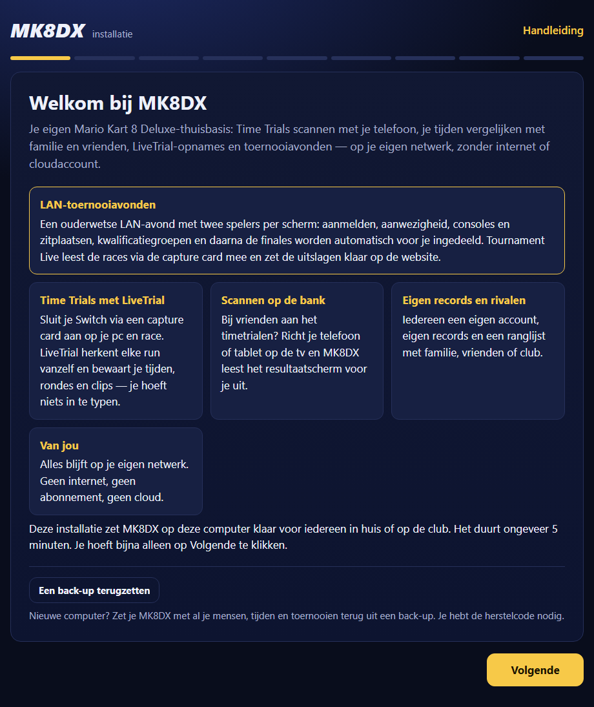
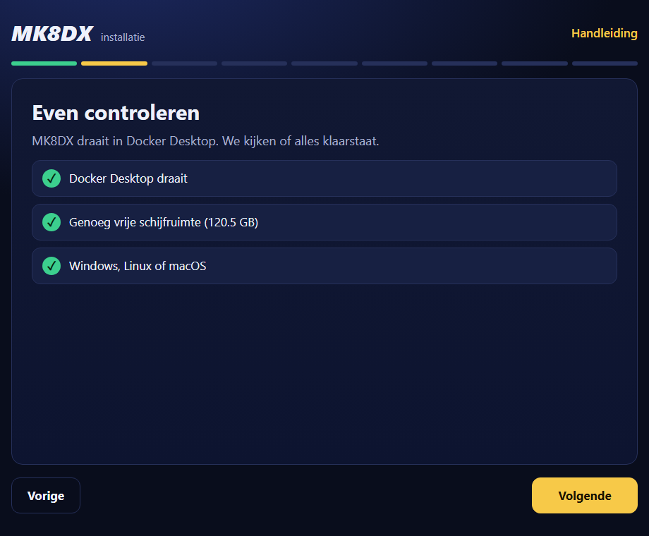
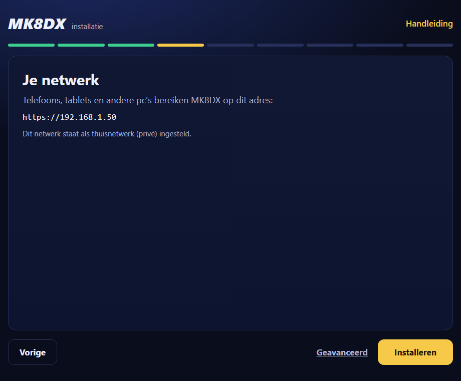
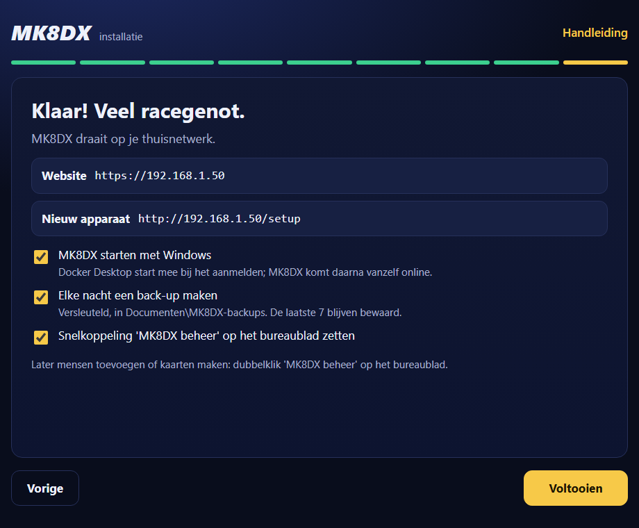
4. De herstelcode en de back-upmap
Een back-up is een reservekopie van alles in MK8DX: mensen, tijden, toernooien en instellingen. MK8DX maakt elke nacht om 03:00 een back-up en bewaart de laatste 7. De back-ups zijn versleuteld: zonder sleutel zijn ze onleesbaar.
De herstelcode is die sleutel. Het zijn vijf groepjes van vier letters en cijfers, bijvoorbeeld ABCD-EFGH-JKLM-NPQR-STUV. Je hebt hem alleen nodig om een back-up op een andere computer terug te zetten.
- Doe kijk na Voltooien naar de kaart MK8DX herstelcode.Je ziet de code, de zin "Zonder deze code is een back-up niet te openen. Hij wordt maar één keer getoond." en daaronder de map waar de back-ups komen.
- Doe schrijf de code over op papier of klik op Kaarten afdrukken om deze pagina af te drukken. Controleer letter voor letter.Je ziet de code op papier. → Waarom maar één keer? MK8DX bewaart de code beveiligd op deze computer voor de nachtelijke back-up, maar laat hem nooit opnieuw zien. Raakt de computer kapot, dan heb je alleen het papier nog.
- Doe bewaar het papier op een veilige plek, niet bij de computer. Wie de code en een back-up heeft, kan alles openen.
Waar de back-ups staan:
- Windows: in de map Documenten, map
MK8DX-backups(op de schijf:C:\Users\<jouw naam>\Documents\MK8DX-backups). - Linux en macOS: in je thuismap, map
Documents/MK8DX-backups(dus~/Documents/MK8DX-backups). Ook op een Nederlandstalige Linux heet die map Documents. - De installatie laat de precieze map onder de herstelcode zien.
Kopieer de map MK8DX-backups af en toe naar een USB-stick of een andere schijf. Gaat de computer kapot, dan staan de back-ups anders alleen op die kapotte computer.
Zette je het vinkje Elke nacht een back-up maken uit, dan krijg je geen herstelcode en worden er geen back-ups gemaakt. Zet je het later in MK8DX beheer weer aan en klik je op Voltooien, dan krijg je op dat moment je herstelcode te zien.
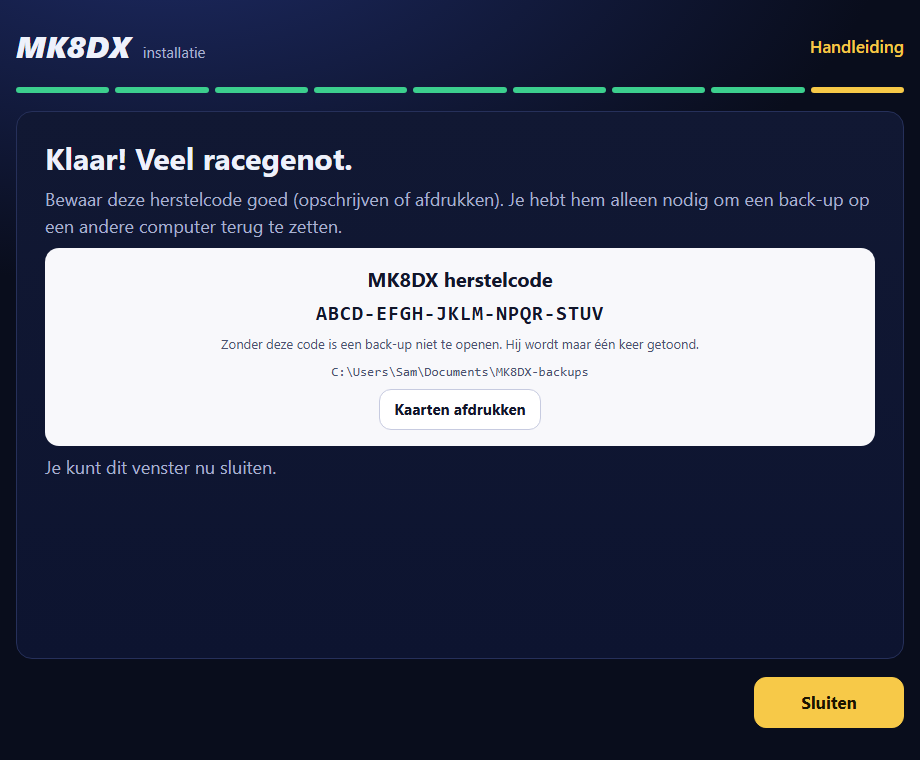
5. Mensen en inlogkaarten (MK8DX beheer)
MK8DX beheer is dezelfde pagina als de installatie, maar dan voor later: mensen toevoegen en inlogkaarten maken. Het werkt alleen op de MK8DX-computer zelf.
Een account is wie inlogt. Een Player is de speler op de ranglijsten, met zijn tijden. Na het inloggen kiest of claimt iedereen op de website zijn eigen Player. Namen worden nooit automatisch aan elkaar gekoppeld.
MK8DX beheer openen
- Doe (Windows): dubbelklik op het bureaublad op MK8DX beheer. Die snelkoppeling start hetzelfde als Start-MK8DX-LAN.cmd. → Je ziet: het zwarte venster en daarna in de browser de pagina met bovenaan "beheer" en de titel MK8DX beheer. → Zie je iets anders? Geen snelkoppeling: dubbelklik in de MK8DX-map op Start-MK8DX-LAN.cmd.
- Doe (Linux): start MK8DX beheer van het bureaublad of uit het appmenu. Op sommige Linux-bureaubladen moet je zo'n pictogram eerst toestaan (met rechts klikken en de optie kiezen om starten toe te staan). Het werkt ook met
sh tooling/start-mk8dx.shin de MK8DX-map, zoals in hoofdstuk 3. → Je ziet: een terminal en daarna de pagina MK8DX beheer. - Doe (macOS, niet getest): dubbelklik op het bureaublad op MK8DX beheer.command, of start
sh tooling/start-mk8dx.shzoals in hoofdstuk 3. → Je ziet: Terminal en daarna de pagina MK8DX beheer.
Mensen toevoegen
- Doe typ bij Namen (één per regel) de namen en klik op Toevoegen.Je ziet de namen onder "In deze installatie:".
- Doe klik op Volgende.Je ziet "Inloggen op telefoons en pc's" in twee stappen: Stap 1 · Apparaat voorbereiden met de kaart Apparaat voorbereiden (één keer per apparaat, je bent daarmee nog niet ingelogd) en Stap 2 · Inloggen als de juiste persoon met voor iedere persoon een vak met de knop Kaart maken.
Kaarten maken en afdrukken
- Doe klik bij een persoon op Kaart maken.Je ziet een QR-code met "Geldig tot" en een tijd. Een kaart werkt één keer en 15 minuten lang. Laat de persoon hem meteen scannen (hoofdstuk 6), of druk hem af.
- Doe maak eerst de kaarten die je wilt hebben en klik dan op Kaarten afdrukken.Je ziet het afdrukvenster van je browser met alle kaarten die op het scherm staan, ook de kaart Apparaat voorbereiden.
- Doe maak ook een kaart voor jezelf (de naam met "(beheerder)") als je op je telefoon wilt inloggen.
Een kaart vervangen of intrekken
- Nieuwe kaart: maakt een nieuwe kaart voor die persoon. De vorige kaart van die persoon op dit scherm werkt dan niet meer.
- Kaart intrekken: de kaart werkt meteen niet meer. Je ziet "Ingetrokken: deze kaart werkt niet meer." Gebruik dit als een kaart kwijt is of bij de verkeerde persoon terechtkwam.
- Je kunt alleen een kaart intrekken die nog op dit scherm staat. Sloot je MK8DX beheer al, dan verloopt een ongebruikte kaart vanzelf na 15 minuten. Is hij misschien al gebruikt, kies dan Overal uitloggen hieronder.
Iemand overal uitloggen
- Doe open MK8DX beheer. Op het eerste scherm staat bij iedere persoon de knop Overal uitloggen. Klik erop.Je ziet de knop verandert in Zeker? Klik nogmaals.
- Doe klik nog een keer.Je ziet "Uitgelogd op alle apparaten. Met een nieuwe kaart kan deze persoon weer inloggen." Die persoon is nu uitgelogd op de website én in de app, het wisselen met één tik naar dat account verdwijnt en open kaarten van die persoon werken niet meer.Zie je iets anders? Bij je eigen naam staat "Jezelf log je uit via het accountmenu op de website ('Op alle apparaten afmelden')." Zo heet die keuze ook op de website.
MK8DX beheer afsluiten
- Doe klik op Volgende tot "Klaar! Veel racegenot.", laat de vinkjes aan en klik op Voltooien en daarna op Sluiten.Je ziet "Je kunt dit venster nu sluiten." MK8DX blijft draaien.
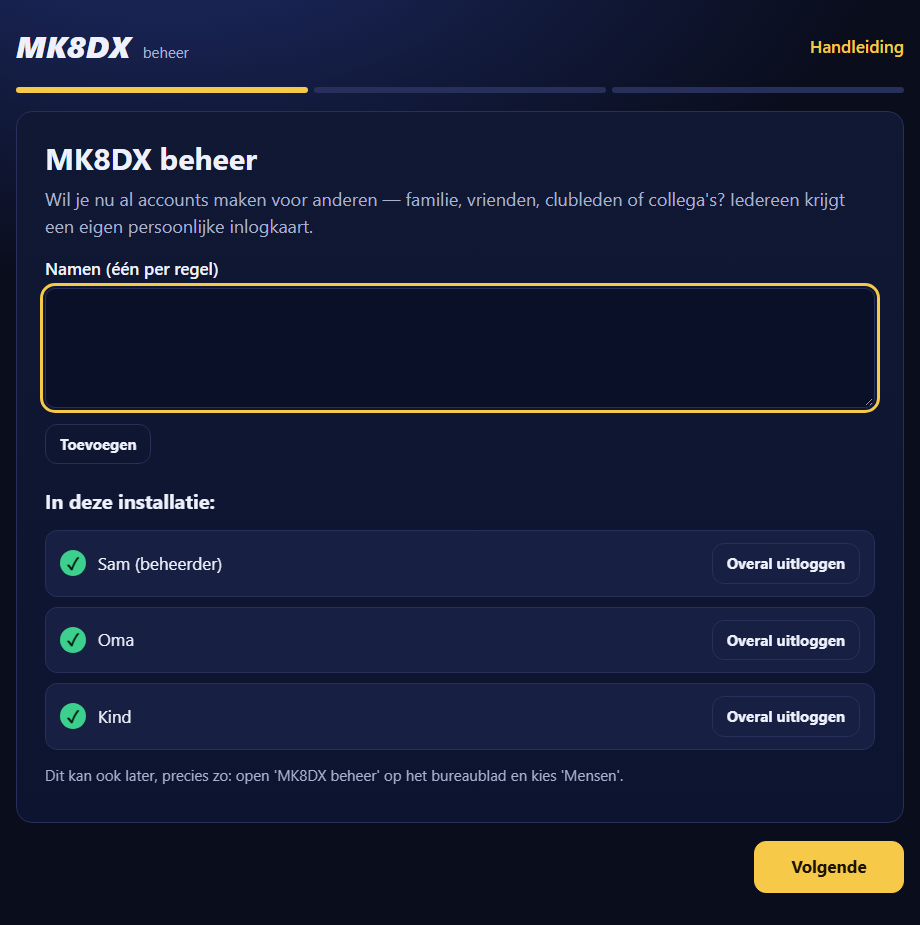
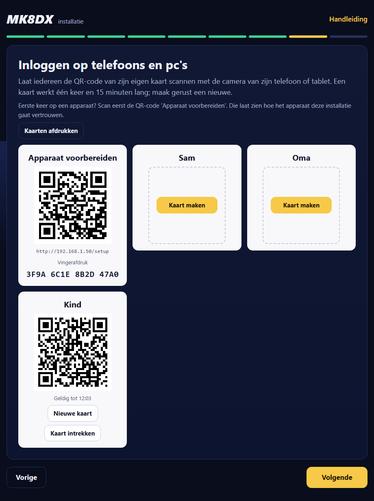
6. Een apparaat voorbereiden en inloggen
Een certificaat is een digitaal identiteitsbewijs. Daarmee weet een telefoon zeker dat hij met jouw MK8DX-computer praat en met niets anders, en is de verbinding versleuteld (https). Omdat MK8DX zonder internet werkt, maakt de installatie zijn eigen certificaat. Elk apparaat moet dat één keer leren vertrouwen. De vingerafdruk is een korte code die bij precies dit certificaat hoort; daarmee controleer je dat je het goede certificaat installeert.
Waarom een certificaat, ook thuis zonder internet?
- Zeker weten dat het jouw MK8DX is. Op een thuis- of clubnetwerk kan iedereen op hetzelfde wifi zich voordoen als jouw MK8DX-computer, bijvoorbeeld een gast met een laptop. Zonder certificaat ziet je telefoon dat verschil niet. Met het certificaat weigert de browser elke andere computer.
- Niemand leest mee. Inlogkaarten, je inlogsessie en alles wat je invult gaan versleuteld over het wifi.
- Waarom MK8DX zijn eigen certificaat maakt. Websites op internet gebruiken certificaten van bekende uitgevers die al in elk apparaat zitten. Die geven geen certificaat voor een thuisadres als
192.168.1.50en werken niet zonder internet. Daarom maakt MK8DX bij de installatie zijn eigen certificaat, en vertel je elk apparaat één keer dat het dat mag vertrouwen. - Wat je daarmee toestaat. Het certificaat is alleen bedoeld voor de privé-netwerkadressen van MK8DX, en de geheime sleutel ervan blijft beveiligd op de MK8DX-computer. Installeer alleen het certificaat van je eigen MK8DX (controleer de vingerafdruk) en verwijder het van een apparaat als je die installatie niet meer gebruikt.
Wat werkt er niet als je het certificaat niet installeert?
- De browser toont bij elk bezoek een paginagrote waarschuwing, zoals "Je verbinding is niet privé". Je kunt die wegklikken, maar doe dat niet: je ziet dan niet meer of je echt met jouw MK8DX praat.
- Ook na wegklikken werken meldingen in de browser niet: de browser staat die alleen toe bij een vertrouwd certificaat. Ook andere browserfuncties kunnen weigeren.
- Wat wél zonder geïnstalleerd certificaat werkt: de Android-app. Die leert het certificaat zelf kennen via de kaart Apparaat voorbereiden (hoofdstuk 7). Een browser op hetzelfde apparaat heeft het certificaat nog wel nodig.
De MK8DX-computer zelf
Ook de computer waarop MK8DX draait moet MK8DX één keer vertrouwen, anders waarschuwt de browser daar bij de website.
- Doe open MK8DX beheer, klik op Volgende tot "Inloggen op telefoons en pc's" en kijk bij Stap 1 naar het blok Deze computer.Je ziet "Deze computer vertrouwt MK8DX al." Dan ben je klaar.Zie je iets anders? Staat er de knop Deze computer voorbereiden, ga dan naar stap 2.
- Doe klik op Deze computer voorbereiden.Je ziet een venster van Windows, Beveiligingswaarschuwing, met de vraag of je het certificaat wilt installeren en een vingerafdruk (sha1). Vergelijk die met de vingerafdruk in MK8DX beheer; zijn ze gelijk, klik dan op Ja.Je ziet "Deze computer vertrouwt MK8DX al."Zie je iets anders? Klikte je op Nee of zijn de vingerafdrukken niet gelijk: klik niet op Ja, sluit het venster en vraag hulp. Op Linux of macOS staat er in plaats van de knop dat je in de browser van deze computer het adres onder Apparaat voorbereiden opent; volg dan de stappen hieronder op deze computer.
Eén keer per apparaat: Apparaat voorbereiden
- Doe zet de telefoon, tablet of pc op hetzelfde wifi- of kabelnetwerk als de MK8DX-computer. Zet bij een telefoon mobiele data niet in de plaats van wifi.Je ziet de naam van je eigen wifi bij de verbinding.
- Doe scan met de camera de QR-code op de kaart Apparaat voorbereiden (in MK8DX beheer of op papier), en tik op de link die verschijnt. Zonder camera typ je het adres Nieuw apparaat in de browser, bijvoorbeeld
http://192.168.1.50/setup.Je ziet de pagina Dit apparaat voorbereiden met "Doe dit één keer per telefoon, tablet of pc. Scan daarna je persoonlijke inlogkaart."Zie je iets anders? Opent de pagina niet: controleer het netwerk en of de MK8DX-computer aan staat (hoofdstuk 11). - Doe vergelijk de code onder "Controleer eerst deze code." met de Vingerafdruk op de kaart Apparaat voorbereiden (vier groepjes van vier tekens).Je ziet precies dezelfde code.Zie je iets anders? Is de code anders, installeer dan niets. Je bent dan misschien op een ander netwerk of een ander adres; controleer dat eerst.
- Doe volg het deel voor jouw apparaat. Het deel voor het apparaat dat je gebruikt staat al open; voor een ander apparaat open je het onder "Ander soort apparaat?". Tik op Certificaat downloaden (iPhone en iPad: Profiel downloaden) en volg de stappen hieronder.Je ziet onderaan "Klaar? Scan je persoonlijke inlogkaart, of open" met het adres van de website.
De stappen op de pagina Dit apparaat voorbereiden:
- Android: tik op de knop om het certificaat te downloaden. Open Instellingen en zoek op "certificaat" (vaak: Beveiliging → Meer beveiligingsinstellingen → Versleuteling en inloggegevens → Certificaat installeren → CA-certificaat). Kies het gedownloade MK8DX-bestand en bevestig met je pincode. De menunamen verschillen per merk telefoon.
- iPhone en iPad (nog niet getest met deze installatie): tik op de knop om het profiel te downloaden en sta het toe. Open Instellingen → Profiel gedownload → Installeer. Daarna Instellingen → Algemeen → Info → Certificaatvertrouwen → zet MK8DX aan.
- Windows: download het certificaat en open het. Kies Certificaat installeren → Huidige gebruiker → Alle certificaten in het onderstaande archief plaatsen → Vertrouwde basiscertificeringsinstanties. Kies niet Tussenliggende certificeringsinstanties. Herstart de browser.
- Mac (macOS is nog niet volledig getest): download het certificaat en open het; Sleutelhangertoegang opent. Open het MK8DX-certificaat → Vertrouw → Altijd vertrouwen.
- Linux (nog niet volledig getest voor deze route): voeg hetzelfde certificaat toe aan de vertrouwde basiscertificaten van je distributie of browser. De stappen verschillen per distributie.
Inloggen met je persoonlijke kaart
- Doe scan je eigen kaart (de kaart met jouw naam) en tik op de link.Je ziet Doe mee met deze MK8DX-installatie en "Controleer eerst of dit HTTPS-adres bij de vertrouwde host hoort. Deze uitnodiging werkt één keer." In de adresbalk van de browser moet het adres van de website staan, bijvoorbeeld
https://192.168.1.50.Zie je iets anders? Een waarschuwing van de browser over het certificaat of een onveilige verbinding: klik die nooit weg. Doe dan eerst Apparaat voorbereiden hierboven. - Doe controleer bij Je logt in als: de naam van de kaart. Is dat jouw naam, wacht dan op "Uitnodiging klaar. Bevestig om in te loggen." en tik op Uitnodiging accepteren. Staat er een andere naam, tik dan niet op accepteren: de kaart blijft geldig voor de juiste persoon.Je ziet "Je bent ingelogd als" met jouw naam, en Verder naar MK8DX. Tik daarop.Zie je iets anders? "Deze uitnodiging is ongeldig. Vraag de beheerder om een nieuwe QR-code." of "Inloggen is niet gelukt. Vraag de beheerder om een nieuwe uitnodiging.": de kaart was al gebruikt, verlopen of ingetrokken. Laat de beheerder een Nieuwe kaart maken.
- Doe volg op de website de welkomststappen: of je hier al tijden of toernooien hebt, en hoe je genoemd wilt worden. Kies of claim zo je eigen Player.Je ziet je naam en je tijden.Zie je iets anders? Staat de naam van je kaart (bijvoorbeeld 'Papa') niet al ingevuld: dat klopt. De naam op de kaart is alleen het label in MK8DX beheer; je spelersnaam kies je hier zelf.
Nog een apparaat voor dezelfde persoon
- Een speler kan zelf een kaart maken: in het accountmenu op de website staat Ook op een ander apparaat inloggen. Dat opent Inloggen op een ander apparaat met een kaart die "Werkt één keer, geldig tot" een tijd. Scan die met het andere apparaat. Laat hem alleen aan je eigen apparaat zien: wie hem scant, is op jouw account ingelogd.
- Beheerders hebben die knop niet. Zij maken in MK8DX beheer een Nieuwe kaart voor zichzelf.
- Een nieuw apparaat doet altijd eerst één keer Apparaat voorbereiden.
- Geen camera, of inloggen op de MK8DX-computer zelf? Maak in MK8DX beheer de kaart van die persoon en klik op Op deze computer inloggen (opent de inlogpagina in de browser van de MK8DX-computer) of op Link kopiëren. Een gekopieerde link stuur je alleen naar die persoon zelf, bijvoorbeeld in een privébericht: wie hem opent, kan inloggen als die persoon. Hij werkt één keer en 15 minuten lang. Bij de kaart Apparaat voorbereiden kopieer je met Adres kopiëren het adres; dat is niet geheim.
Stoppen met deze installatie op een apparaat: verwijder het certificaat weer via dezelfde instellingen waarmee je het installeerde.
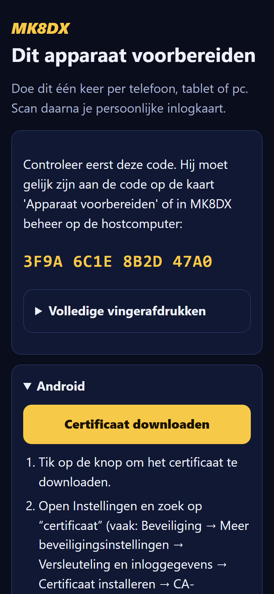
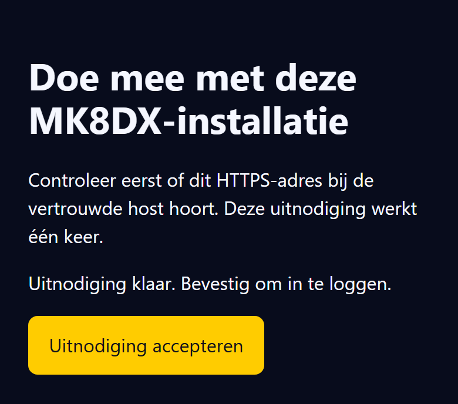
7. De Android-app en LiveTrial
De Android-app koppelen
Deze koppeling is getest met een testversie van de app en zit nog niet in een uitgebrachte app. De app heeft het certificaat niet nodig in de instellingen van Android, maar het aanmelden loopt via de browser van de telefoon. Doe daarom eerst hoofdstuk 6 op deze telefoon: Apparaat voorbereiden en inloggen met je kaart in de browser.
- Doe open in de app Instellingen en tik bij Communityserver op Server wijzigen.Je ziet het scherm "Communitywebsite" met de knop Home or club installation (scan QR) / Installatie thuis of bij de club (QR scannen). Tik daarop.
- Doe tik zo nodig op Camera gebruiken en sta de camera toe. Scan de QR-code van de kaart Apparaat voorbereiden.Je ziet Vergelijk dit met het hostscherm met een Adres en een Root publieke sleutel SHA-256 (SPKI).Zie je iets anders? "Dit is niet de setup-QR van een MK8DX-installatie.": je scande een persoonlijke kaart. Scan de kaart Apparaat voorbereiden. Lukt scannen niet, typ dan het adres Nieuw apparaat (bijvoorbeeld
http://192.168.1.50/setup) bij Of plak de setup-link en tik op Volgende. - Doe vergelijk het adres met het adres van de website, en de lange sleutel met de pagina Dit apparaat voorbereiden: open daar Volledige vingerafdrukken en kijk bij "Root public key SHA-256 (SPKI)". Die pagina kun je op een ander apparaat openen, of op de MK8DX-computer zelf via het adres Nieuw apparaat.Je ziet beide precies gelijk. Tik op Verbinden en bevestig het wisselen van server.Zie je iets anders? Verschillen ze, tik dan op Terug en verbind niet. "Geen passend certificaat gekregen van": controleer het netwerk en of de MK8DX-computer aan staat, en probeer opnieuw.
- Doe tik in Instellingen bij Speler op deze telefoon op Aanmelden en daarna op Aanmelden om te synchroniseren.Je ziet de browser opent de goedkeuringspagina. Controleer dat de site dezelfde code toont als de app en keur het apparaat goed. Ga terug naar de app.Zie je iets anders? Vraagt de browser om in te loggen, log dan eerst in met je kaart (hoofdstuk 6).
- Doe plaats een tijd in de app.Je ziet de tijd op de website van de installatie.
Ontkoppelen: Instellingen → Server wijzigen → Forget this installation / Deze installatie vergeten.
LiveTrial op een tweede Windows-pc
LiveTrial is een Windows-programma dat je Time Trials via een capturekaart (een kastje dat het beeld van je Switch naar de pc stuurt) herkent en bewaart. Het installeren van LiveTrial zelf staat in hoofdstuk 6 van docs/install/MK8DX_Handleiding_NL.txt. Getest op een testinstallatie met LiveTrial 3.37.0. De stappen in het kort:
- Laat die pc eerst de installatie vertrouwen: hoofdstuk 6, deel Windows. Controleer dat de website in de browser zonder waarschuwing opent.
- Zorg dat jouw account op de website een Player heeft.
- Open LiveTrial, klik op het tandwiel (Instellingen) en vul bij Adres van je communitywebsite het adres van de website in, bijvoorbeeld
https://192.168.1.50. - Klik op Aanmelden en kies Open de goedkeuringspagina. Keur het apparaat in de browser goed.
- Verstuur ritten met Nu verzenden, of zet Nieuwe ritten automatisch verzenden aan in Instellingen.
Goed om te weten: zonder Player eindigt het inloggen in LiveTrial met de melding dat je eerst je Player op de website moet instellen. Na het wijzigen van het adres start LiveTrial opnieuw; gebeurt dat niet, sluit LiveTrial dan en open het opnieuw. Accounts en wachtende runs voor een andere server blijven bij die server. Gebruik je deze pc niet meer met de installatie, verwijder het MK8DX-certificaat dan weer uit Vertrouwde basiscertificeringsinstanties (hoofdstuk 6).
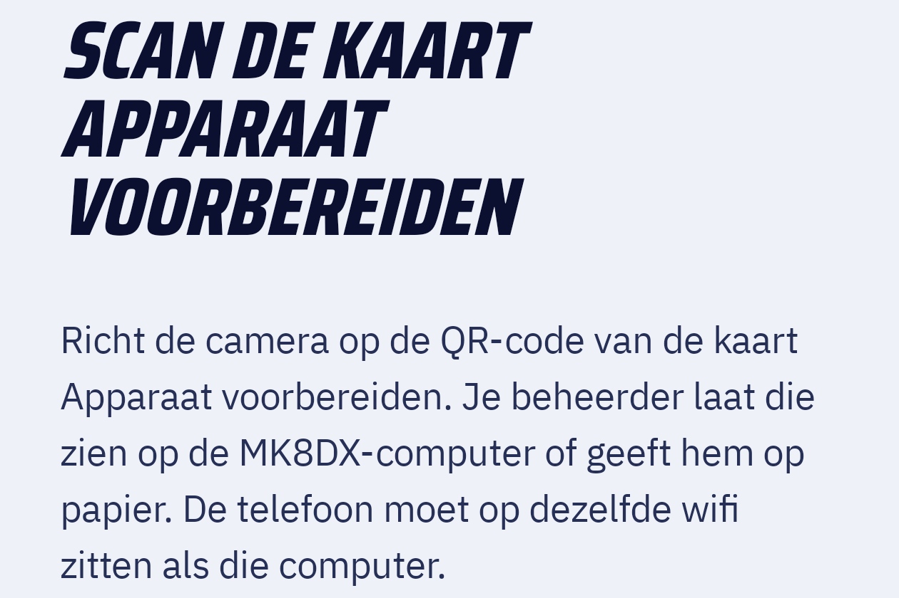
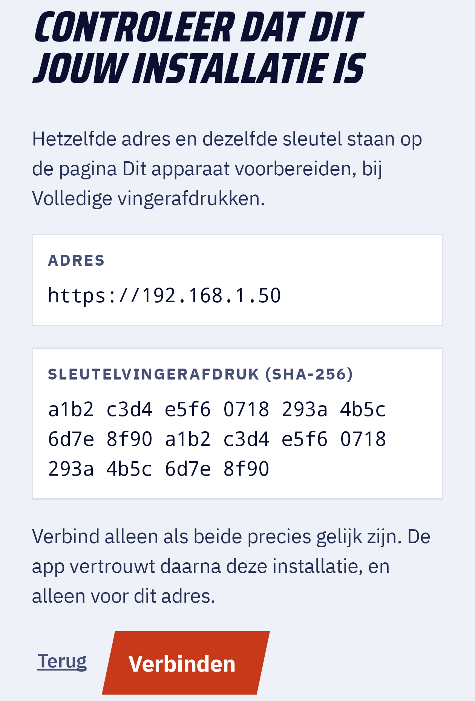
8. Dagelijks gebruik
De MK8DX-computer moet aan staan. Zolang iemand wil spelen, moet de MK8DX-computer aan staan, wakker zijn en op het netwerk zitten. Zet de slaapstand bij voorkeur uit tijdens een speelavond. Docker moet draaien; op Windows en macOS start Docker Desktop vanzelf als je aanmeldt (hoofdstuk 10).
Eén telefoon of tablet voor het hele gezin
- Iedereen logt één keer in met zijn eigen kaart op dat apparaat.
- Website: daarna wissel je met één tik via het accountmenu: kies Ander account en dan de persoon.
- Pincode: wie wil, zet op de website bij Instellingen → Pincode voor ander account een pincode van 4 cijfers. Wisselen naar dat account vraagt dan eerst om die pincode.
- Android-app: Instellingen → Speler op deze telefoon → Van speler wisselen, en kies de persoon met Wisselen. Heeft die persoon een pincode, dan vraagt de app Pincode nodig en Pincode (4 cijfers). Een verkeerde pincode geeft "Die pincode klopt niet."
- Beheerders staan alleen in die lijst als ze een pincode hebben ingesteld (Instellingen → Pincode voor ander account). Zonder pincode loggen ze opnieuw in met een kaart. Voor een beheerder is het strenger: na de 5e verkeerde pincode verdwijnt het beheerdersaccount van dat apparaat, en na 14 dagen niet gebruiken ook; daarna is weer een kaart nodig. In de Android-app staan beheerders (nog) niet in de lijst.
Uitloggen
- Op de website via het accountmenu rechtsboven: Afmelden (alleen dit apparaat) of Op alle apparaten afmelden.
- Iemand anders overal uitloggen doet de beheerder in MK8DX beheer met Overal uitloggen (hoofdstuk 5).
Kaart kwijt of telefoon kwijt
- Kaart kwijt die nog niet gebruikt is: Kaart intrekken als hij nog in MK8DX beheer op het scherm staat; anders verloopt hij na 15 minuten vanzelf.
- Telefoon kwijt, of kan een kaart al gebruikt zijn: kies in MK8DX beheer bij die persoon Overal uitloggen en klik nogmaals. Geef de persoon daarna een Nieuwe kaart.
Licht of donker: de website volgt op een nieuw apparaat de instelling Systeem van dat apparaat. Na het inloggen kies je via Account → Instellingen → Weergave → Donker het donkere thema; die keuze wordt bij je account bewaard.
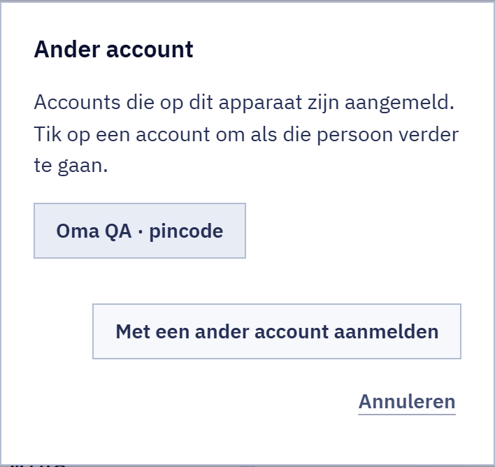
9. Een toernooiavond
Dit hoofdstuk is alleen een overzicht. De echte stappen staan in de handleidingen die hieronder genoemd worden. Een toernooiavond regel je op de website van je installatie; de Director is degene die de avond leidt.
- De avond op de website: de stappen 0 tot en met 10 (deelnemers en aanwezigheid, consoles, groepen en zitplaatsen, scores, finales en de afsluiting) staan in
docs/guides/TOURNAMENT_DIRECTORS.md(Engels, in de repository op GitHub; niet in het pakket) en in hoofdstuk 6 "Android, LiveTrial, scanner en Tournament gebruiken" vandocs/install/MK8DX_Handleiding_NL.txt(in het pakket). - Tournament Live: een Windows-programma dat de races via een capturekaart meeleest. Zie
docs/product/README_TOURNAMENT_LIVE_LAPTOP.mdin de repository. - Tournament Processor: leest een opgenomen video (.mp4 of .mkv) en maakt er Excel-, CSV- en resultaatbestanden van. Zie
docs/product/README_TOURNAMENT_PROCESSOR_FALLBACK_LAPTOP.mdendocs/product/USING_MK8DX_TOURNAMENT_TOOLS.mdin de repository. - Excel of CSV als terugvaloptie: scores kun je op de website ook met de hand invullen of uit een Excel/CSV-bestand importeren. Daar heb je geen extra programma voor nodig.
- Herkenning maakt nooit vanzelf een officiële uitslag. De Director controleert en bevestigt elke race.
- Nog niet getest: het verbinden van de Tournament Tools met een installatie voor thuis of de club is nog niet beschreven of getest. Resultaatbestanden van de Processor of Tournament Live kun je wel via de website importeren.
10. Back-ups, een nieuwe computer, een nieuw adres, herstarten en updates
Back-ups bewaren
- Doe steek af en toe een USB-stick in de MK8DX-computer en kopieer de hele map
MK8DX-backups(hoofdstuk 4) erop.Je ziet op de stick een mapMK8DX-backupsmet mappen die met een datum beginnen, bijvoorbeeld20261111-030000. - Doe bewaar de stick en het papier met de herstelcode op verschillende plekken.
Terugzetten op een nieuwe computer
Dit werkt alleen op een computer waarop MK8DX nog niet geïnstalleerd is.
- Doe bereid de nieuwe computer voor zoals in hoofdstuk 2.Je ziet Docker draait en Python werkt.
- Doe kopieer de map
MK8DX-backupsvan je USB-stick naar de map Documenten (Windows) of~/Documents(Linux en macOS). Of laat de USB-stick erin zitten.Je ziet de mapMK8DX-backupsop de nieuwe computer of op de stick. - Doe pak het MK8DX-pakket uit en start het zoals in hoofdstuk 3. Klik op het welkomstscherm op Een back-up terugzetten.Je ziet "Even controleren" en daarna Een back-up terugzetten met "Kies de back-up en vul de herstelcode in die je bij de eerste installatie hebt opgeschreven."
- Doe kies de back-up (de nieuwste staat bovenaan, met datum en tijd).Zie je iets anders? "In deze map staat geen MK8DX-back-up." (die melding noemt de Windows-map, ook op Linux en macOS): typ bij Andere map (bijvoorbeeld een USB-stick): de map met de back-ups en klik op Zoeken. Dat veld verschijnt ook als je op Geavanceerd klikt.
- Doe typ bij Herstelcode je code van het papier. Spaties, kleine letters of het weglaten van de streepjes maken niet uit. Klik op Volgende.Je ziet "Je netwerk". De knop Volgende werkt pas als de hele code is ingevuld.
- Doe controleer het adres zoals in hoofdstuk 3 en klik op Terugzetten.Je ziet "Back-up openen en terugzetten" en daarna "MK8DX draait weer, met alles uit de back-up." Op Windows vraagt Windows weer één keer toestemming: klik op Ja.Zie je iets anders? "Deze herstelcode opent de back-up niet. Controleer de code en probeer het opnieuw.": klik twee keer op Vorige tot je weer bij de herstelcode bent, verbeter de code (of kies een andere back-up) en probeer opnieuw.
- Doe klik op Volgende door MK8DX beheer heen tot "Klaar! Veel racegenot." en klik op Voltooien.Je ziet "Nieuwe back-ups gebruiken dezelfde herstelcode als voorheen." Je papieren code blijft dus geldig.
- Na het terugzetten: iedereen, alle tijden, toernooien en instellingen zijn terug. Telefoons en pc's blijven MK8DX vertrouwen. Heeft de nieuwe computer een ander adres, dan scant iedereen één keer de kaart Apparaat voorbereiden en logt opnieuw in; gekoppelde apps koppel je opnieuw (hoofdstuk 7).
Een ander netwerkadres
Je router geeft de MK8DX-computer zijn adres. Meestal blijft dat hetzelfde, maar het is niet gegarandeerd: na een nieuwe router, een stroomstoring of als de computer lang uit stond, of in een ander netwerk (bijvoorbeeld op de club), kan het adres anders worden. Dan moet MK8DX verhuizen en scant iedereen opnieuw de kaart. Dat voorkom je met een vast adres.
Een vast adres geven (aanbevolen, eenmalig)
Een vast adres regel je het best in de router, met een DHCP-reservering: de router bewaart dan één adres voor deze computer en geeft het nooit aan een ander apparaat.
- Doe zoek het adres en het fysieke adres van de computer. Windows: open Opdrachtprompt, typ
ipconfig /allen druk op Enter. Linux: typip -br addrenip -br link.Je ziet bij de verbinding die je gebruikt (Wi-Fi of Ethernet) een IPv4-adres (bijvoorbeeld192.168.1.50) en een Fysiek adres (ook MAC-adres genoemd, bijvoorbeeld3C-52-82-AB-CD-EF). Kabel en wifi hebben elk een eigen fysiek adres: kies dat van de verbinding die de computer echt gebruikt (bij voorkeur een kabel). - Doe open de instellingen van je router in de browser. Het adres en het wachtwoord staan vaak op een sticker op de router (bijvoorbeeld
192.168.1.1of192.168.0.1). - Doe zoek de reservering. De naam verschilt per merk, bijvoorbeeld "DHCP-reservering", "Adresreservering", "Vast IP-adres", "Statische lease" of "Altijd hetzelfde IPv4-adres toewijzen". Meestal staat het onder LAN, Netwerk, DHCP of Thuisnetwerk, bij de lijst met verbonden apparaten.
- Doe kies de MK8DX-computer in de lijst (of vul het fysieke adres in), houd het huidige adres aan en sla op.Je ziet de computer staat in de lijst met reserveringen.
- Doe herstart de computer en controleer met
ipconfigdat het adres gelijk bleef. Is het hetzelfde adres dat MK8DX al gebruikt, dan hoef je verder niets te doen. Koos je in de router een ander adres, verhuis MK8DX dan zoals hieronder.
Een adresconflict voorkomen
Een adresconflict ontstaat als twee apparaten hetzelfde adres gebruiken. Een van beide (soms de MK8DX-computer) is dan steeds even of helemaal niet bereikbaar; Windows meldt soms "Er is een IP-adresconflict".
- Gebruik een reservering in de router, geen adres dat je zelf in de netwerkinstellingen van Windows of Linux typt. Een zelf ingetypt adres kent de router niet: hij kan het later aan een telefoon of console geven.
- Kun je niet bij de router (bijvoorbeeld op de club) en moet het toch handmatig: kies een adres buiten de reeks die de router uitdeelt (de "DHCP-pool"; deelt de router
192.168.1.100tot192.168.1.199uit, kies dan bijvoorbeeld192.168.1.50) en controleer eerst dat niemand het gebruikt:ping 192.168.1.50mag geen antwoord geven. Neem subnetmasker, gateway en DNS over zoals de router ze gaf. Vraag het liefst de beheerder van dat netwerk. - Laat in één netwerk maar één apparaat adressen uitdelen. Staan er twee routers achter elkaar (bijvoorbeeld het modem van je provider en een eigen wifi-router), dan zijn dat twee netwerken: zet de MK8DX-computer en alle telefoons in hetzelfde netwerk, of zet de tweede router in access-point-modus.
- Had je een conflict: geef het andere apparaat een ander adres (of de MK8DX-computer een reservering) en open MK8DX beheer. Zie je Deze computer heeft een nieuw netwerkadres, volg dan de stappen hieronder.
Verhuizen naar een nieuw adres
- Doe kreeg de computer toch een ander adres, open dan MK8DX beheer (hoofdstuk 5).Je ziet Deze computer heeft een nieuw netwerkadres met "MK8DX stond op" het oude adres en het nieuwe adres eronder.
- Doe klik op Verhuizen. Met Geavanceerd kies je zo nodig een ander adres.Je ziet "Naar het nieuwe adres verhuizen (Windows vraagt toestemming)"; klik in het Windows-venster op Ja. Daarna "MK8DX draait op het nieuwe adres."
- Doe klik op Volgende en ga verder zoals in MK8DX beheer. Laat telefoons en pc's één keer de kaart Apparaat voorbereiden scannen en opnieuw inloggen; gekoppelde apps koppel je opnieuw. Ze blijven MK8DX vertrouwen; de kaart Apparaat voorbereiden heeft nu het nieuwe adres.
Na een herstart van de computer
- Windows: de taak "MK8DX start" start Docker Desktop zodra je je aanmeldt op Windows; MK8DX komt daarna vanzelf online. Iemand moet zich dus aanmelden: staat de computer na een Windows-update op het aanmeldscherm, dan is MK8DX pas weer bereikbaar na aanmelden.
- Linux: Docker Engine start bij het opstarten van de computer (dankzij
sudo systemctl enable --now dockeruit hoofdstuk 2B), en MK8DX komt vanzelf mee. - macOS (niet getest): een aanmeldtaak opent Docker Desktop als je je aanmeldt.
Nachtelijke taken
- Om 03:00 maakt MK8DX de back-up. Om 03:30 vernieuwt MK8DX zo nodig zijn eigen certificaat; daar merk je niets van.
- Windows: stond de computer uit of sliep hij, dan lopen gemiste taken zo snel mogelijk daarna. De back-up wacht dan tot Docker draait.
- Linux: de taken lopen als jouw gebruiker. Een gemiste taak loopt alsnog zodra je weer aangemeld bent.
- macOS (niet getest): een gemiste taak loopt zodra de Mac uit de sluimerstand komt.
Updates
- Doe download het nieuwe MK8DX-pakket en pak het uit naar een nieuwe map, net als in hoofdstuk 3 (ook het opheffen van de blokkering). Laat de oude map nog staan.Je ziet een tweede map met
Start-MK8DX-LAN.cmd. - Doe dubbelklik in de nieuwe map op
Start-MK8DX-LAN.cmd.Je ziet eerst het laden van de programma's met een lopende tijd, daarna in de browser Een nieuwere versie van MK8DX met de oude en de nieuwe versie.Zie je iets anders? Opent gewoon MK8DX beheer, dan draait deze versie al. Staat er dat het pakket ouder is dan de installatie, gebruik dan het nieuwste pakket. - Doe klik op Bijwerken.Je ziet "Back-up maken en controleren" en daarna "Nieuwe versie installeren en starten", elk met een lopende tijd; na een paar minuten MK8DX is bijgewerkt met de oude en de nieuwe versie. Alle mensen, tijden, toernooien en inloggingen blijven bewaard; telefoons hoeven niets opnieuw te doen. De automatische back-up, de certificaatvernieuwing en de snelkoppeling MK8DX beheer zijn dan al overgezet naar de nieuwe map. De back-up van vlak ervoor staat in Documenten\MK8DX-backups met
before-updatein de naam. In het zwarte startvenster staatOK MK8DX update completed.Zie je iets anders? Staat er in het startvensterMK8DX update FAILEDmet een reden, of een foutmelding in de browser: lees de reden, los die op (bijvoorbeeld Docker Desktop starten) en start opnieuw vanuit de nieuwe map. - Doe klik op Sluiten. Wil je daarna nog iets regelen, klik dan eerst op Naar MK8DX beheer.Je ziet het browservenster sluit; in het startvenster druk je op een toets om het te sluiten.
- Doe verwijder daarna de oude map.Je ziet MK8DX blijft gewoon werken.
Andere installatieroutes (één computer, eigen server, webhosting) staan in docs/install/MK8DX_Handleiding_NL.txt.
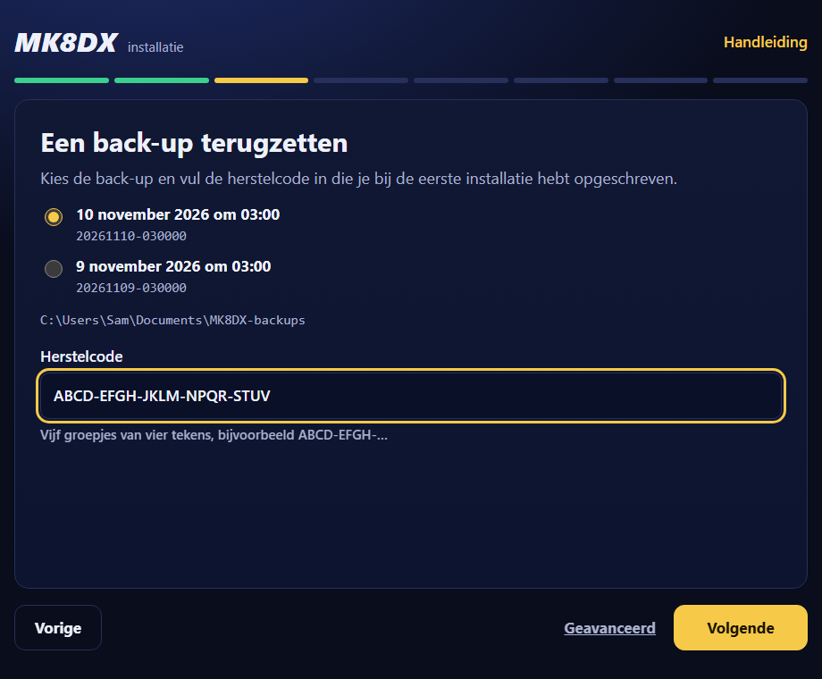
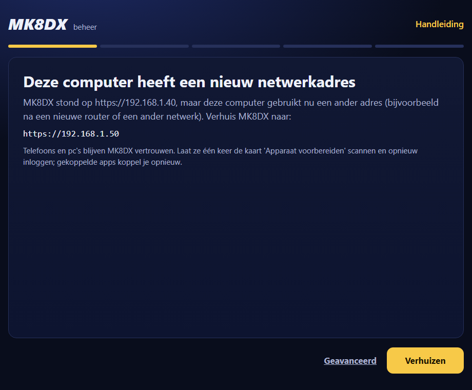
11. Problemen oplossen
- Een telefoon kan de website niet openen. Zit de telefoon op hetzelfde wifi-netwerk (niet op mobiele data en niet op een gastennetwerk)? Staat de MK8DX-computer aan, wakker en aangemeld, en draait Docker? Klopt het adres met Website uit hoofdstuk 3? Linux: heb je de firewall-opdracht uit hoofdstuk 3 uitgevoerd? Heeft de computer een nieuw adres: zie hieronder.
- De browser waarschuwt voor het certificaat. Klik de waarschuwing niet weg. Doe op dat apparaat Apparaat voorbereiden (hoofdstuk 6) en controleer de vingerafdruk.
- Een kaart werkt niet meer. Een kaart werkt één keer en 15 minuten lang, en werkt niet meer na Kaart intrekken, Nieuwe kaart of Overal uitloggen. Maak een nieuwe kaart in MK8DX beheer.
- "Deze herstelcode opent de back-up niet." Controleer de code letter voor letter; hoofdletters, kleine letters, spaties en streepjes maken niet uit. De code bevat nooit de letters I en O of de cijfers 0 en 1. Kies ook de juiste back-up: een back-up van een andere installatie opent niet met jouw code.
- "MK8DX is already installed on this computer; restore needs a computer without it". Terugzetten kan alleen op een computer zonder MK8DX. Vraag een IT'er om hulp (hoofdstuk 12).
- Docker draait niet. Windows en macOS: start Docker Desktop, wacht op Engine running en klik op Opnieuw proberen, of start MK8DX opnieuw. Linux:
sudo systemctl start docker. - De computer heeft een nieuw adres. Open MK8DX beheer en kies Verhuizen (hoofdstuk 10).
- Windows: "The network is 'DomainAuthenticated'; ask its administrator to allow TCP 80/443". De computer zit in een bedrijfsnetwerk dat MK8DX niet zelf mag wijzigen. Vraag de beheerder van dat netwerk om binnenkomende verbindingen op TCP-poort 80 en 443 toe te staan.
- Windows: "Windows did not allow the change (the permission prompt was declined or failed)". Klik op Opnieuw proberen en daarna in het Windows-venster op Ja.
- Linux: telefoons komen er niet in en de firewall staat aan. Klik bij Installeren op Details en voer de opdracht na "manual:" uit, bijvoorbeeld
sudo ufw allow from 192.168.1.0/24 to 192.168.1.50 port 80,443 proto tcp. Met firewalld is datsudo firewall-cmd --permanent --add-service=http --add-service=https && sudo firewall-cmd --reload. - De Android-app zegt "Dit is niet de setup-QR van een MK8DX-installatie." Scan de kaart Apparaat voorbereiden, niet een persoonlijke kaart.
12. Voor IT'ers (optioneel)
Dit hoofdstuk is niet nodig voor gewoon gebruik.
Waar de privégegevens staan
- Windows:
%LOCALAPPDATA%\MK8DX\LAN(Start-MK8DX-LAN.cmd geeft die map mee). - Linux:
~/.local/share/mk8dx/LAN(of$XDG_DATA_HOME/mk8dx/LANals die variabele gezet is). - macOS:
~/Library/Application Support/MK8DX/LAN. - Naast die map staat een eigen Python-omgeving
python-offline-<code>met de meegeleverde Python-pakketten: op Windows metScripts\python.exe, op Linux en macOS metbin/python. Gebruik die Python voor de opdrachten hieronder. - Deel deze map en de back-ups nooit. Geheimen zijn op Windows beveiligd met DPAPI, op macOS in de Sleutelhanger en op Linux met
systemd-creds --userwaar dat beschikbaar is, anders alleen met bestandsrechten.
Opdrachten (uit te voeren in de map van het pakket, met de Python hierboven en --state-dir naar de map met privégegevens):
tooling/install.py status --state-dir <map>: controleert of profiel, certificaten en instellingen bij elkaar passen.tooling/install.py check --state-dir <map>: status plus de Docker Compose-instellingen en de containers.tooling/auto_backup.py run --state-dir <map>: maakt nu een versleutelde back-up met de bewaarde herstelcode, net als de nachtelijke taak (met--backup-root <map>in een andere map). Let op:install.py backupis voor andere routes en maakt geen A2-back-up.tooling/install.py maintain-ca --qa-offline-candidate --state-dir <map>: vernieuwt het certificaat als dat nodig is en doet anders niets;--force-ca-rotationvernieuwt meteen.tooling/install.py change-lan-address --lan-bind-address 192.168.1.51 --qa-offline-candidate --state-dir <map>: verhuist naar een nieuw adres, net als Verhuizen.tooling/install.py stop --state-dir <map>entooling/install.py start --qa-offline-candidate --state-dir <map>: stoppen en starten.tooling/install.py upgrade --backup-output <nieuwe map> --qa-offline-candidate --state-dir <map>: maakt en controleert eerst een back-up, past daarna database-updates toe en start de containers opnieuw met de images waarmee deze installatie is opgezet. Overstappen op de images van een nieuwer pakket hoort daar nog niet bij, en deze route is voor A2 niet getest.tooling/setup_wizard.py --state-dir <map>: de installatiepagina zelf;--no-browseropent geen browser.--qa-offline-candidateis de interne vlag waarmee een A2-pakket zijn eigen offline functies aanzet; de installatiepagina en het startbestand geven hem zelf mee.
Geplande taken en netwerk
- Windows (Taakplanner): "MK8DX backup" (03:00), "MK8DX certificate renewal" (03:30) en "MK8DX start" (bij aanmelden), alle drie voor de aangemelde gebruiker zonder beheerdersrechten.
- Linux: systemd-gebruikerstimers
mk8dx-mk8dx-backup.timerenmk8dx-mk8dx-certificate-renewal.timer(met Persistent=true). - macOS: LaunchAgents in
~/Library/LaunchAgentsmet namen die beginnen metnl.mariokart8.mk8dx-. - De website luistert op TCP 80 en 443 van het gekozen adres. De beheerpagina luistert alleen op
127.0.0.1van de MK8DX-computer zelf. - Windows: de firewallregel
MK8DX-A2-offline-<adres>staat TCP 80 en 443 toe op dat adres, alleen voor het profiel Privé. Een openbaar netwerk wordt op privé gezet; een domeinnetwerk wordt nooit gewijzigd. - Linux: MK8DX vraagt zelf nooit om sudo. Bij een actieve ufw of firewalld toont de installatie de opdracht; zonder actieve firewall is er niets te doen. macOS: Docker Desktop opent de poorten zelf.
- Mislukt het terugzetten halverwege, dan wordt de halve installatie opzijgezet in een map naast de privégegevens met
.failed-en een tijd in de naam, zodat je opnieuw kunt proberen.
Niets gevonden.